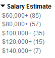
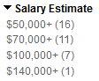
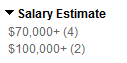
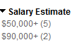
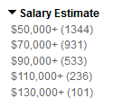
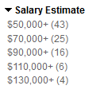
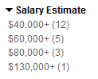

JS Data Visualization libraries
- In-depth documentation, tutorials
- Extended feature set
- Trend is increasing, though library does not seem to be widely used.
- 
- Adequate documentation
- Simple feature set
- Trend increasing, though only a single job mentions its use by name
- Good documentation, examples
- Good feature set
- Adoption rate may have plateaued (based on Raphael.js)
- 
- Good documentation, demos
- Extended feature set
- Trend decreasing, low adoption rate
- 
- Good documentation, demos, and tutorials
- Extended feature set, animation, and interactivity
- Adoption rate may have plateaued, not widely used
- 
- Great documentation, demos, tutorials
- Good feature set, animation
- Widely used, great adoption rate
- 
- Great documentation, demos, tutorials
- Great feature set, animations, interactivity
- Not widely used, trend increasing
- 
- Good documentation, demos
- Good feature set
- Trend increasing
- 